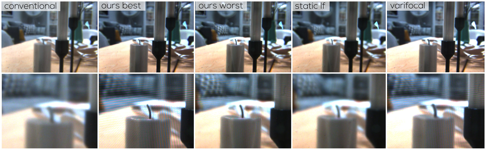

Abstract
The vergence-accommodation conflict (VAC) presents a major perceptual challenge for head-mounted displays with a fixed image plane. Varifocal and layered display designs can mitigate the VAC. However, the image quality of varifocal displays is affected by imprecise eye tracking, whereas layered displays suffer from reduced image contrast as the distance between layers increases. Combined designs support a larger workspace and tolerate some eye-tracking error. However, any layered design with a fixed layer spacing restricts the amount of error compensation and limits the in-focus contrast. We extend previous hybrid designs by introducing confidence-driven volume control, which adjusts the size of the view volume at runtime. We use the eye tracker's confidence to control the spacing of display layers and optimize the trade-off between the display's view volume and the amount of eye tracking error the display can compensate. In the case of high-quality focus point estimation, our approach provides high in-focus contrast, whereas low-quality eye tracking increases the view volume to tolerate the error. We describe our design, present its implementation as an optical-see head-mounted display using a multiplicative layer combination, and present an evaluation comparing our design with previous approaches.
Prototype
Our wearable optical see-through head-mounted display prototype, built from off-the-shelf components, features two LCD layers. The front layer, stripped of its backlight, allows light modulation from the rear LCD, emitting a light field of rendered content. This light field is reflected by a mirror, focused by a lens, and combined with the real-world light before reaching the user's eye. The prototype allows each layer to move independently through a mechanical mechanism, adjusting the emitted light field to match the user's estimated focus distance and the underlying uncertainty. Each layer is controlled by two actuators, ensuring smooth and precise adjustments. Mechanical endstops are used to define absolute layer positions, triggered at the beginning of each session.
Comparisons to other Displays
Thanks to the dynamic adjustment of its layers, our system optimally presents content based on the estimated uncertainty of the user's focus distance. This results in higher contrast and better perceived quality compared to other display types. Using the simulations above, you can compare the perceived image quality of different displays. Adjust the user focus distance and the eye tracking error with the two sliders at the top. In this example, you can choose between two variations of our display types: In Ours (best case), the viewing volume matches the eye tracking error, while in Ours (worst case), the estimated focus distance is outside the viewing volume. Additionally, you can compare our system to a Conventional display with an image plane at 0.5 dpt, a Static light field display with stacked LCDs fixed at 5 dpt and 0.8 dpt, and a Varifocal display with a single adjustable image plane.
Through-the-lens Results
Citation
@article{ebner2024ost,
author={Ebner, Christoph and Plopski, Alexander and Schmalstieg, Dieter and Kalkofen, Denis},
journal={IEEE Transactions on Visualization and Computer Graphics},
title={Gaze-Contingent Layered Optical See-Through Displays with a Confidence-Driven View Volume},
year={2024}
}